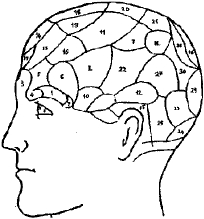

Ara ş t ı rma Serisi No.13
¯¯¯¯¯¯¯¯¯¯¯¯¯¯¯¯¯¯¯¯¯¯¯¯¯¯¯¯¯¯¯¯¯¯
9
Yüz Okuma Sanat ı
¯¯¯¯¯¯¯¯¯¯¯¯¯¯¯¯¯¯¯¯¯¯¯¯¯¯¯¯¯¯¯¯¯¯
2.2. Franz Josef Gall' ı n Kafatas ı Haritas ı
F.J. Gali 1805 y ı l ı nda yay ı nlad ı ğ ı "Yeni Anatomik ve Fizyolojik Sistem" adl ı eserinde kafatas ı haritas ı n ı çizmi ş tir. 1. ve 2. ş ekillerde kafatas ı n ı n önden ve yandan görünümü verilmi ş tir.
Gall'a göre 2,3,9,15-21 rakamlar ı yla i ş aretlenmi ş yetenekler sadece insana aittir. Di ğ er yetenekler insanlar ı n yan ı s ı ra hayvanlara da aittir.
3. ve 4. ş ekillerde kafatas ı iki taraftan görüntülenmi ş tir: önden ve yandan...
◄ Ş ekil 1. Al ı n k ı sm ı 1. Fiziksel sevgi
2. İ yilik, ş efkat, ihsan 3. Çeli ş ki hissi
4. Ki ş ilik, bireylik, ferdiyet hissi 5. Hilekarl ı k
6. H ı rs ı zl ı ğ a yatk ı nl ı k 7. Onur
8. Ş öhret tutkusu, ihtiras 9. Tedbirlilik, dikkatlilik 10. E ğ itilme, ehlile ş tirilme
13. Sözel haf ı za
11. Mekan içgüdüsü. 12. Yüz haf ı zas ı
14. Benzerliyi h ı zl ı alg ı lama yetene ğ i. 15. Metafizik ak ı l 16. Zeka
17. Ş iirsel yetenek.
18. İ yi kalplilik, aç ı k yüreklilik 19. İ mitasyon, taklit 20. Dinsel içgüdü
21. İ stikrarl ı l ı k, dengelilik 22. Tedbirlilik, dikkatlilik 23. Ki ş ilik içgüdüsü.
◄ Ş ekil 2. Yan k ı s ı m

1. 2. 3. 4. 5. 6. 7. 8.
Fiziksel sevgi Çeli ş ki hissi
Ki ş ilik, bireylik, ferdiyet hissi Hilekarl ı k
H ı rs ı zl ı ğ a yatk ı nl ı k Onur
Ş öhret tutkusu, ihtiras Tedbirlilik, dikkatlilik
__________________________________________________________________
© WWW.MAXIMUMBILGI.COM